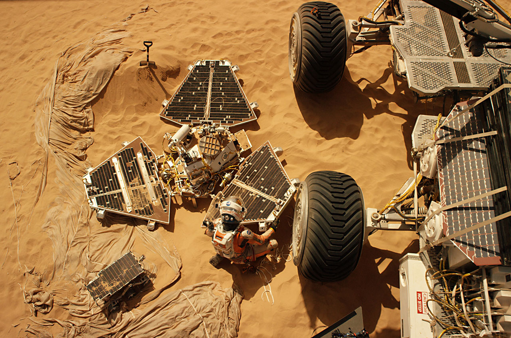
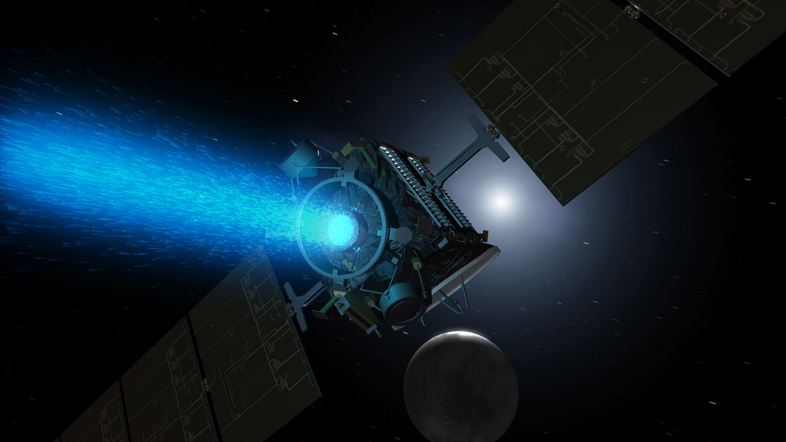

Featured Probes:

Mars Pathfinder is a spacecraft that landed a base station with a
roving probe on Mars in 1997. Pathfinder’s Sojourner rover was a
llightweight (10.6 kg) wheeled robotic Mars rover which became the
first rover to operate outside the Earth–Moon system.
Read More

The Parker Solar Probe is a NASA space probe launched in 2018 with the
mission of making observations of the outer corona of the Sun. It will
approach to within 9.86 solar radii (6.9 million km or 4.3 million
miles) from the center of the Sun, and by 2025 will travel, at closest
approach, as fast as 690,000 km/h, or 0.064% the speed of light.
Read More

Galileo was an American robotic space probe that studied the planet
Jupiter and its moons, as well as several other Solar System bodies.
It consisted of an orbiter and an entry probe. Galileo arrived at
Jupiter on December 7, 1995, after gravitational assist flybys of
Venus and Earth, and became the first spacecraft to orbit Jupiter and
enter the atmosphere of the gas giant.
Read More

Dawn was launched by NASA in September 2007 with the mission of
studying two of the three known protoplanets of the asteroid belt:
Vesta and Ceres. Dawn entered orbit around Vesta on July 16, 2011, and
completed a 14-month survey mission before leaving for Ceres in late
2012. It entered orbit around Ceres on March 6, 2015.
Read More